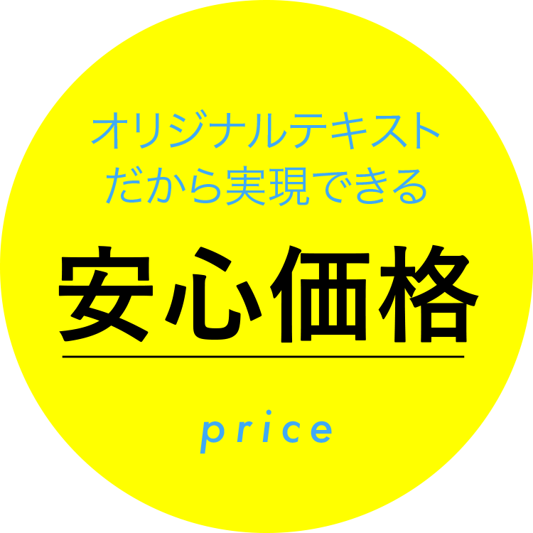
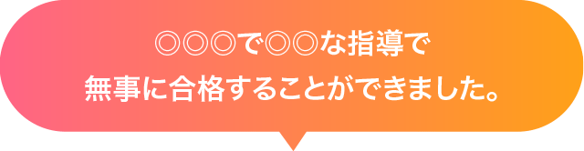

30年の実績、◎◎人の合格者排出。高認・看護受験通信講座


合格実績30年の通信・通学講座。
経済的に不安が大きいけれど、
塾で勉強をやり直したい。
高校を中退したけれど、
大学へ行きたい。
社会人でゼロから、
看護の道へ。
江原予備校では、そんな人達が計○○名
夢を現実にして羽ばたいていきました。
夢を、「追いかけるための夢」で終わらせない。
500円で踏み出せる一歩。
あなたも夢を形にしてみませんか。
それぞれの分野に特化した
2種類のコース
Course江原予備校の通信講座を
選ぶ理由
Reasonオリジナルテキストだから
実現できる安心価格
他業者を挟まない「完全自社制作」のテキストだから、低料金。


短期間で習得可能
モチベーションを保てる【14日間】で完結できる自社テキスト。過去問につながる中学校の復習から始めるから、立ち止まることなく短期間でも習得可能。
江原予備校の
合格体験記
Passing experience
医療看護通信講座
A・Mさん（社会人）／令和元年度
◎◎◎◎◎◎学校 合格
「なんとかかんとかなんとかかんとかなんとかかんとかなんとかかんとかなんとかかんとかなんとかかんとかなんとかかんとかなんとかかんとかなんとかかんとかなんとかかんとかなんとかかん」


高卒認定通信講座
A・Mさん（社会人）／令和元年度
◎◎◎◎◎◎学校 合格
「なんとかかんとかなんとかかんとかなんとかかんとかなんとかかんとかなんとかかんとかなんとかかんとかなんとかかんとかなんとかかんとかなんとかかんとかなんとかかんとかなんとかかん」
通信教育ってちょっと不安・・・
その不安を解消します！
質問できる通信講座
「わからない」ときも安心の、LINEやZOOMで質問できる通信講座。 北海道から沖縄の方まで、幅広くご利用いただいております。

豊富な合格実績
★江原予備校は30年で豊富な合格実績★江原予備校は30年で豊富な合格実績★
- ● 熊本大学 なんとか学部
- ● 熊本大学 なんとか学部
- ● 熊本大学 なんとか学部
- ● 熊本大学 なんとか学部
- ● 熊本大学 なんとか学部
- ● 熊本大学 なんとか学部
- ● 熊本大学 なんとか学部
- ● 熊本大学 なんとか学部
- ● 熊本大学 なんとか学部
- ● 熊本大学 なんとか学部
- ● 熊本大学 なんとか学部
- ● 熊本大学 なんとか学部
…など、有名大学から地方専門学校まで約◎◎◎◎の合格実績

お試しセット・ご質問など